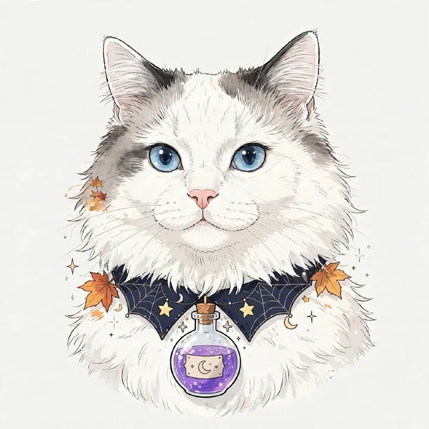
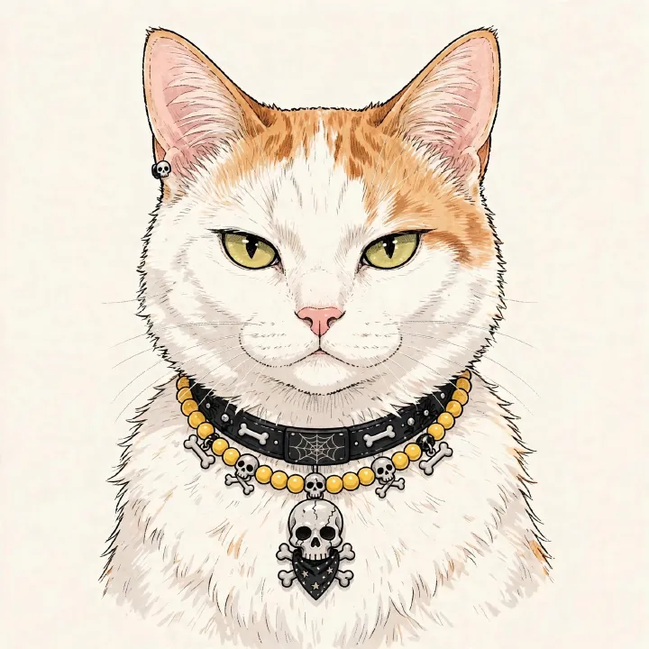
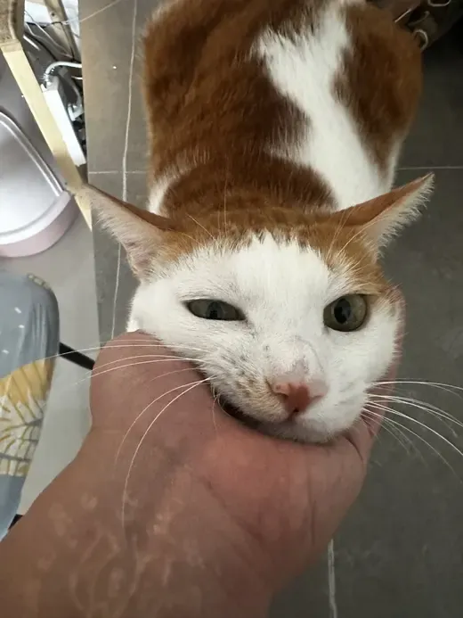

饮食
主粮与份量NutriSource 甄萃无谷鸡肉豌豆全犬粮
11.79 kg／329 元；每日 340 g，早 170 g、晚 170 g。
目标体重 27–28 kg档案以 ob 已有记录为基础。以后发来狗狗名字、日期、事件及照片或视频，确认更新范围后，我会按你指定的位置更新对应卡片及／或 ob 档案。
路飞 · 疫苗到期免疫记录待补充
路飞 · 犬证到期续期记录待补充
男孩 · 未绝育
重点照护护髋 · 控重 · 观察食欲和肠胃双侧髋关节发育不良；2026-07-11 起食欲偏弱、肠胃敏感。
费用档案ob《luffy月度费用统计.md》2026-10-09 寄宿 806 元／7 天已记
11.79 kg／329 元；每日 340 g，早 170 g、晚 170 g。
目标体重 27–28 kg以后照片会以缩略图显示，点按可看大图；视频可在记录内直接播放。

muse 健康追踪2026-10-22 食欲下降状态记录：「连续3日食欲差，食量减半」
状态记录：「冲凉，掉毛很多」
💬 AI点评
1. 体重 29.4kg，比 10-15 接回时的 30.0kg 轻了 0.6kg，朝 27–28kg 目标走，方向对。但两台秤之间有误差很正常，以后看同一台秤的趋势更准。
2. 皮肤轻微发红：洗澡后短暂发红可以先观察；如果持续不退、扩散、或伴随抓挠，建议看兽医。
3. 废毛多：中长毛犬正常现象，多梳毛是对的，能减少打结和掉毛。
4. 耳道褐色分泌物：耳垢堆积，定期清洁是对的。但如果出现异味、抓耳朵、摇头、碰耳朵会躲或叫，就可能是感染信号，要去看兽医，不要自己往耳道深处捅。
📚 撞库
📎 引用
"从狗狗沐浴香波到耳朵清洁剂和牙膏，都要选择有机或无化学成分的卫生产品。"（《永远的爱犬》第三部分）
"脂肪除了能够帮助狗狗维持健康的大脑生化反应，保持最佳的皮肤和毛发状态……"（《永远的爱犬》第一部分）
"缺锌会导致皮肤健康状况不佳，伤口愈合不良"（《永远的爱犬》第三部分）
"a routine ear clean is only needed if dirt or debris is noted, as overcleaning the ears can also lead to irritation"（Cornell Riney Canine Health Center《How to Clean Your Dog's Ears》）
用户原文：「接路飞了，体重跟去的时候差唔多冇咩差别，但系依然掉毛严重，我同佢刷完毛才上车」
💬 AI点评：30.0kg 对 10-09 的 29.8kg，寄养 7 天基本持平。但书里反复强调体重与关节的关系——大型犬本就易患髋关节发育不良，超重会加重关节负担。路飞离 27–28kg 目标还有 2kg 以上，控重是护髋第一要务。另提醒：麦德氏 H06 按体重分档（29.8kg 吃 1 粒，≥30kg 吃 2 粒），现在正好踩线 30.0kg，换的那天看体重定剂量。
📚 撞库：事实→ob《luffy详细养护档案》一、基础档案／四、关节保健品／七、护髋控重准则；知识→ob《永远的爱犬》第一部分
📎 引用：事实「身体状况：双侧髋关节发育不良」「目标理想体重：27–28kg」；知识「德国牧羊犬容易患髋关节发育不良」「导致狗狗体重困境的两个最大因素似乎是（1）我们喂食的方式和食物种类，以及（2）它们的运动量」
💬 AI点评：书里荷马的案例很对症——老狗戒掉超加工粮、加上新鲜食物后，"枯槁干燥的皮毛变得水润而有光泽，掉毛情况好了很多"。书里还明确：鱼油能改善皮肤健康，ω-3（亚麻籽油、三文鱼油）对皮毛有益。建议：可考虑给路飞加鱼油（选甘油三酯或磷脂形式，不选乙酯形式），配合勤刷毛。ob 里此前无掉毛记录，这是第一次出现；若伴随皮屑、红疹、抓挠，再往皮肤病方向查。
📚 撞库：知识→ob《永远的爱犬》第三部分、第一部分；事实→用户本次原文（ob此前无掉毛记录）
📎 引用：「它枯槁干燥的皮毛变得水润而有光泽，掉毛情况好了很多」「鱼油能改善皮肤、行为、大脑和心脏健康」「添加在新鲜食物中的健康油脂为第二组比格犬提供了ω-3（omega-3）脂肪酸」「要确保它是甘油三酯或磷脂形式」
💬 AI点评：寄养 7 天食欲一直偏弱，回家后 2–3 天波动属正常适应期。书里荷马也是"敏感的胃"走渐进式调整——路飞肠胃本就敏感，回家别急着加量，维持少食多餐。重点观察：能否恢复自己吃完正餐、空腹呕吐黄水复不复发。
📚 撞库：事实→ob《luffy详细养护档案》二、进食状态记录；知识→ob《永远的爱犬》第三部分
📎 引用：事实「食欲差，需人喂才肯吃；空腹饿到吐黄水一次」；知识「为了照顾狗狗"敏感的胃"，我们以渐进的方式慢慢让它戒掉了超加工狗粮」
禁跳高、落楼梯、急冲急转；只做平地慢走。不加餐，训练奖励从正餐份量中扣除。
射手座
养护主线高龄犬严控体重减少剧烈跳跃和长时间上下楼梯。
具体剂量与开始日期待补充。
状态事件待补充；可按「粉粉 + 日期 + 事件 + 照片／视频」记录
照片点按可看大图；视频可在记录内直接播放。
新增健康观察后，这里会优先对照 ob《永远的爱犬》给出点评与引用。
高龄犬严控体重；减少剧烈跳跃、长时间上下楼梯；零食需从主食份量中扣减。
天蝎座 · 体型偏壮实
健康主线老年犬 · 重点留意关节与肾脏曾有前右脚神经痛。
每餐 80–95 g，先取下限 80 g；以狗粮包装喂食表为准。
按时持续喂食，养护关节；具体剂量待补充。
照片点按可看大图；视频可在记录内直接播放。

muse 健康追踪2026-10-22 换粮状态记录：「现粮不耐受（排泄异常），需换粮」
💬 AI点评：食亲只粮都唔好系不耐受唔系过渡问题；苍苍10岁高龄肠胃更敏感，换新粮必须7-10日渐进（1/4→1/2→3/4→全换）；每日睇便便+体重（12.4kg严控中）。
📚 撞库：《永远的爱犬》第二部分
📎 引用："从急性腹泻（因为更换食物速度太快）"（《永远的爱犬》第二部分）
状态记录：「洗澡，皮肤良好，废毛好多，耳道脏」
💬 AI点评
1. 皮肤良好，这次洗澡整体状况不错。
2. 废毛多：柴犬双层毛，掉废毛是正常的，定期梳理能减少打结和家里毛量。
3. 耳道脏：照片里能看到深色分泌物，宠物店建议每天清理——先把脏东西清干净是对的；等耳朵干净后就不用天天清，过度清洁反而刺激耳道。
4. 留意感染信号：如果耳道发红、有异味、cang 频繁摇头或抓耳朵，要去看兽医，不要自己硬清。
📚 撞库
📎 引用
"脂肪除了能够帮助狗狗维持健康的大脑生化反应，保持最佳的皮肤和毛发状态……"（《永远的爱犬》第一部分）
Cornell Riney 犬类健康中心《How to Clean Your Dog's Ears》：只在耳朵脏时清洁；过度清洁会刺激耳道；若出现发红、异味、摇头、抓挠等感染迹象应就医。
禁长时间奔跑、频繁跳上跳下；饮食清淡，杜绝高盐零食；重点观察前右脚，出现跛行、不愿走或触痛即就医；严控体重，避免增加心脏负担。
双鱼座
健康主线髌关节养护 · 严控体重后腿髌关节有问题；保持偏瘦，减少关节负担。
与路飞同款；每日 145–160 g，每餐 73–80 g。初始每餐 75 g，观察体态。
每日坚持，长期养护髌关节；具体剂量待补充。
照片点按可看大图；视频可在记录内直接播放。

muse 健康追踪2026-10-22 换粮与呕吐复发状态记录：「现粮不耐受需换粮；呕吐复发 1 次（昨日 10-21 停，今日又呕，全日共 1 次）」
💬 AI点评：换粮须7-10日渐进防急性腹泻；呕吐时间线：10-18（1次）→10-19（1次）→10-20（2-3次）→10-21（停）→10-22（1次），停一日又返说明病因未除，唔好再拖，尽快约周医生；今日已确认全日共呕吐 1 次，继续记录呕吐物性状。
📚 撞库：《永远的爱犬》第二部分、第三部分
📎 引用："从急性腹泻（因为更换食物速度太快）"（《永远的爱犬》第二部分）
状态记录：「连续呕吐 3 天；臀部（PatPat）位置有皮肤病，脱落了一大片毛发」
💬 AI点评
1. 10-23 凌晨又吐 1 次，早上已带去唯尔宠物医院看诊，现等结果。呕吐时间线已拉长到 6 天（10-18 起），这次就诊很及时。等结果出来后记下诊断、用药和复查时间。
2. 臀部脱毛观察是否有红肿、皮屑、是否频繁舔舐或抓挠。暂时不要自行涂抹任何药物，等兽医诊断后再处理。
3. 呕吐和皮肤问题可能是两件事，也可能有关联（如过敏），目前仅凭描述无法判断，需兽医检查。
📚 撞库
📎 引用
"缓解急性呕吐和腹泻等问题"（《永远的爱犬》第三部分）
"EPA和DHA应对狗狗各种疾病（包括过敏性皮肤病和炎症性肠病）的抗炎作用已经得到评估"（《永远的爱犬》第三部分）
⚠️ 以上仅供参考，不能代替兽医诊断；建议今日就医，就医时带上呕吐物和脱毛部位的照片/视频。
状态记录：「洗澡，皮肤、耳道良好，废毛多」
💬 AI点评
1. 皮肤、耳道都良好，这次洗澡没发现问题，是好消息。
2. 废毛多：柴犬双层毛，掉废毛是正常的，多梳毛能减少打结和家里毛量，宠物店的建议是对的。
3. 定期洗护：按宠物店建议的周期来就行。
📚 撞库
📎 引用
"脂肪除了能够帮助狗狗维持健康的大脑生化反应，保持最佳的皮肤和毛发状态……"（《永远的爱犬》第一部分）
"它枯槁干燥的皮毛变得水润而有光泽，掉毛情况好了很多"（《永远的爱犬》第三部分，荷马案例）
禁跳楼梯、频繁蹦跳、急跑急转弯；所有零食从主食份量中扣减。每月定期称重，体重持续上升即下调狗粮上限。
健康观察 · AI 健康点评
💬 AI点评：连续3日食量减半要分清「唔想食」定「食唔落」；路飞29.4kg目标减重到27-28kg护髋，短期食少唔怕但要确保饮水充足；留意有无呕吐腹泻咳嗽等伴随症状，有即睇兽医。
📚 撞库：《永远的爱犬》第三部分
📎 引用：持续食欲不振超过24-48小时建议咨询兽医。